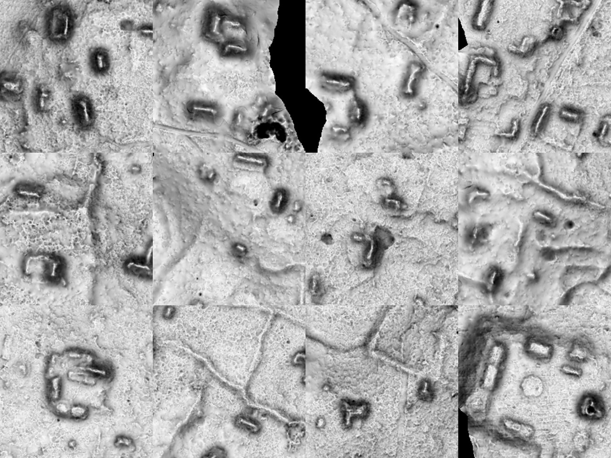
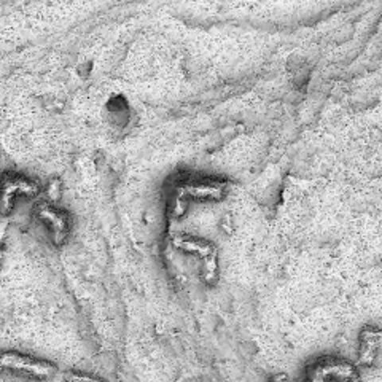
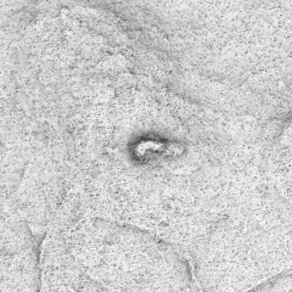
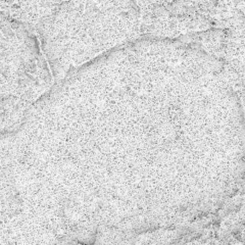
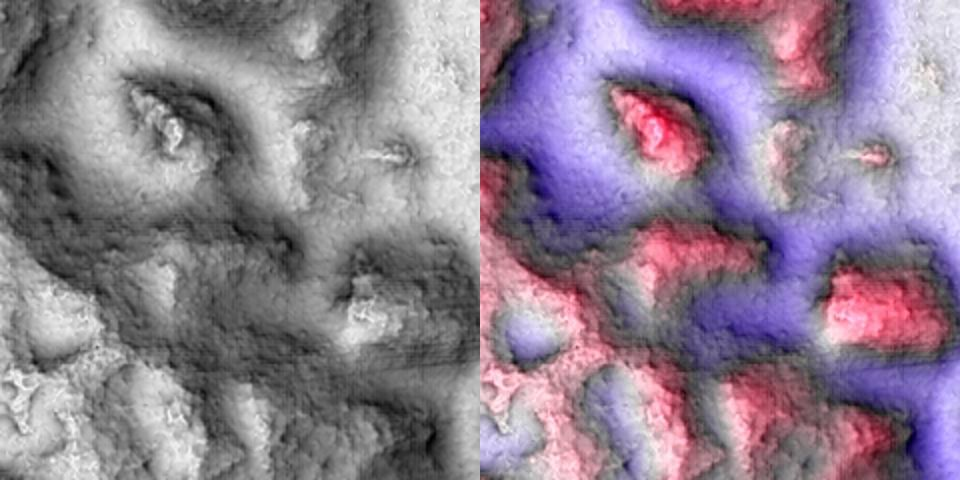

Una ri-analisi con errori misurati del LiDAR pubblico G-LiHT sullo Yucatán
Con l'aiuto di assistenti AI ho cercato rilievi a forma di costruzione nei 456 transetti LiDAR della NASA sullo Yucatán, gli stessi già studiati da altri gruppi. Lo scopo è misurare quanto sbaglia ogni passaggio: il rilevatore, chi rivede le immagini, il confronto con ciò che è già noto.
- Rilevatore
- 76,4%
- delle 942 strutture annotate da archeologi ritrovate; l'83,0% delle 677 segnalazioni cade su una struttura annotata.
- Test su 329 riquadri di Chactún mai usati in addestramento, terreno denso di rovine.
- Revisori
- 3–4 su 10
- edifici noti riconosciuti dai revisori AI; nessuno dei 10 riquadri vuoti indicato come struttura.
- Quindi il loro giudizio serve a confermare, non a scartare.
- Scansione
- 11.916
- complessi candidati su 1.272,7 km². Ne sono stati rivisti 40: 15 reggono alla revisione.
- Gli altri 11.876 sono da rivedere.
Questo rilievo è già stato analizzato da altri gruppi (Estrada-Belli et al. 2025; Britton 2026, con un catalogo di 57.181 strutture non ancora pubblico). Ogni candidato si presume già noto finché un confronto non mostra il contrario.

02Perché questo lavoro
A novembre 2026 Pietro Miotti ha fatto esaminare a 48 agenti AI circa 1.200 km² di questo stesso LiDAR e ha segnalato un insediamento che l'INAH non aveva nel registro. L'archeologa Sarah Parcak ha fatto notare che era già pubblicato in un lavoro del 2025 guidato da Francisco Estrada-Belli. L'11 novembre Miotti ha riconosciuto che gli agenti l'avevano riscoperto.
Il metodo funzionava. Mancavano tre misure: quanto sbaglia il rilevatore, quanto sbagliano gli agenti che guardano le immagini, e chi aveva già visto quel punto. Vaglio riprende il metodo e aggiunge quelle tre misure.
03Dati
| Rilievo | NASA G-LiHT, campagna AMIGA-Carb, aprile–maggio 2013. Laser Riegl VQ-480 a circa 335 m dal suolo. |
|---|---|
| Riprocessamento | B. J. Britton, University of Cincinnati, 2026. Punti a terra riclassificati da capo, modelli del terreno a 33 cm. |
| Copertura | 456 transetti, 1.272,7 km². Strisce larghe circa 400 m e lunghe in mediana 7,6 km. |
| Accesso | Pubblico, senza chiave, tramite OpenTopography: doi:10.5069/G9Z899N1 e doi:10.5069/G9TH8JX9. |
04Metodo
- Terreno. Dal modello del terreno a 0,5 m si calcolano sky-view factor, apertura positiva e pendenza, con i parametri pubblicati da Kokalj et al. (2023).
- Rilevatore. Un classificatore a gradient boosting stima per ogni pixel la probabilità che appartenga a un edificio o a una piattaforma. È addestrato sulle annotazioni di Chactún fatte da archeologi.
- Complessi. I rilievi sopra soglia distanti meno di 60 m formano un complesso candidato. È l'unità che si rivede e si conta.
- Revisione al buio. I candidati sono mostrati come riquadri di 120 m, senza nome né posizione, mescolati a riquadri di controllo di cui la risposta è nota. Chi rivede non sa quali sono i controlli.
- Confronto. Ogni candidato viene confrontato con gli elenchi di siti noti, con l'elenco dei lavori già fatti su questo rilievo e con l'uso del suolo di oggi (ESA WorldCover 2021).
Il criterio di successo del rilevatore è stato scritto e registrato nel repository prima di eseguire il test, e il test è stato eseguito una volta.
05Misure
Il rilevatore, sul test di Chactún
| Riquadri di test, mai usati in addestramento | 329 |
|---|---|
| Strutture annotate da archeologi | 942 |
| Strutture annotate ritrovate | 76,4% |
| Segnalazioni del rilevatore | 677 |
| Segnalazioni che cadono su una struttura annotata | 83,0% |
| Sovrapposizione dei contorni (IoU) | 0,566 |
| Criterio scritto prima: almeno 70% e 70% | superato |
- Ogni riquadro di Chactún contiene almeno una struttura. La precisione vale in terreno denso di rovine; in terreno vuoto, carsico o coltivato non è misurata da questo test.
- Chactún è stato rilevato con un altro strumento, a densità di punti più alta. Quanto il rilevatore perda sui dati NASA del 2013 non è noto.
- I contorni sono grossolani. Il rilevatore dice dove guardare, non disegna piante.
I revisori, sui controlli nascosti
| Revisore | Edifici noti riconosciuti | Vuoti indicati come struttura |
|---|---|---|
| Agente D | 4 su 10 | 0 su 10 |
| Agente E | 3 su 10 | 0 su 10 |
| Agente F | 4 su 10 | 0 su 10 |
La revisione è stata fatta da agenti AI dello stesso modello. Sui riquadri di controllo hanno riconosciuto 3–4 edifici noti su 10 e non hanno indicato come struttura nessuno dei 10 riquadri vuoti. Per questo il loro giudizio vale per confermare, non per scartare.
I tre revisori concordano fra loro sul 90–97% dei candidati. Il primo giro di revisione è stato annullato: i controlli con struttura erano tagliati sul bordo del riquadro e i revisori vedevano, correttamente, terreno vuoto.




I 40 candidati rivisti
Sono stati estratti quando erano scansionati circa 40 transetti, tutti nel blocco di volo centrale: 20 col punteggio più alto in quel momento e 20 a caso fra gli altri. Dei primi 20 ne reggono 12; dei 20 a caso ne reggono 3. Nessuno è stato scartato, perché questi revisori non possono scartare.
Mostra come tabella
| Posizione | Estrazione | Esito |
|---|---|---|
| 13 | 20 più alti allora | incerto |
| 54 | 20 più alti allora | regge alla revisione |
| 69 | 20 più alti allora | regge alla revisione |
| 111 | 20 più alti allora | regge alla revisione |
| 127 | 20 più alti allora | regge alla revisione |
| 134 | 20 più alti allora | regge alla revisione |
| 137 | 20 più alti allora | regge alla revisione |
| 183 | 20 più alti allora | regge alla revisione |
| 239 | 20 più alti allora | incerto |
| 240 | 20 più alti allora | incerto |
| 242 | 20 più alti allora | incerto |
| 246 | 20 più alti allora | regge alla revisione |
| 258 | 20 più alti allora | regge alla revisione |
| 267 | 20 più alti allora | regge alla revisione |
| 271 | 20 più alti allora | regge alla revisione |
| 329 | 20 più alti allora | incerto |
| 394 | 20 più alti allora | regge alla revisione |
| 420 | 20 più alti allora | incerto |
| 428 | 20 più alti allora | incerto |
| 433 | 20 più alti allora | incerto |
| 1.844 | 20 a caso | regge alla revisione |
| 2.979 | 20 a caso | incerto |
| 2.980 | 20 a caso | regge alla revisione |
| 3.066 | 20 a caso | regge alla revisione |
| 6.811 | 20 a caso | incerto |
| 6.822 | 20 a caso | incerto |
| 6.928 | 20 a caso | incerto |
| 7.121 | 20 a caso | incerto |
| 7.486 | 20 a caso | incerto |
| 7.524 | 20 a caso | incerto |
| 8.133 | 20 a caso | incerto |
| 8.423 | 20 a caso | incerto |
| 8.741 | 20 a caso | incerto |
| 8.908 | 20 a caso | incerto |
| 10.762 | 20 a caso | incerto |
| 10.992 | 20 a caso | incerto |
| 11.112 | 20 a caso | incerto |
| 11.721 | 20 a caso | incerto |
| 11.732 | 20 a caso | incerto |
| 11.858 | 20 a caso | incerto |
Come leggere questo campione
- Nella scansione completa quei «20 più alti» stanno fra la 13ª e la 433ª posizione su 11.916. I 20 presi a caso stanno fra la 1.844ª e la 11.858ª.
- Il campione viene da un solo blocco di volo e non si estende agli altri sei.
- Tre agenti dello stesso modello che concordano non sono tre conferme indipendenti.
- Gli agenti riconoscono gli edifici a lati netti e non i tumuli consumati. Quindi 15 è una stima per difetto di quanti, fra questi 40, sono costruiti, e 25 incerti non vuol dire 25 falsi.
- I 15 che reggono sono in maggioranza gruppi di rilievi (mediana 7); gli incerti sono in mediana un rilievo isolato.
06La scansione completa
Tutti i 456 transetti sono stati scansionati: 1.272,7 km², 11.916 complessi candidati, 24.265 rilievi singoli dentro quei complessi. Un complesso candidato non è un sito: è un punto in cui il rilevatore ha visto una forma.
Mostra come tabella
| Rilievi per complesso | Complessi |
|---|---|
| 1 rilievo | 7.328 |
| 2 | 2.409 |
| 3–4 | 1.334 |
| 5–9 | 631 |
| 10 o più | 214 |
| Reggono alla revisione | 15 |
|---|---|
| Incerti | 25 |
| Da rivedere | 11.876 |
| Scartati | 0 |
| Entro 2 km da uno dei 229 siti elencati su Wikidata | 249 |
| Sotto un'area costruita oggi (almeno 5% del riquadro) | 150 |
| Sotto un coltivo di oggi (almeno 30% del riquadro) | 34 |
| Nessun uso moderno evidente | 11.732 |
L'uso del suolo viene da ESA WorldCover 2021 (10 m), con soglie fissate prima di guardare i candidati. È una colonna esplicativa, non una verifica: il LiDAR è del 2013, una pista nel bosco può non risultare costruita, e un abitato moderno può stare sopra un sito antico. Sui primi 1.548 candidati, gli 11 sotto un'area costruita sono stati guardati uno per uno: sono tutti strade asfaltate con le loro scarpate.
Nessun candidato è stato confrontato con il catalogo di Britton né con il registro dell'INAH. I 24.265 rilievi di Vaglio e le 57.181 strutture di Britton non sono confrontabili: definizioni, soglie e metodi sono diversi.
07I candidati che reggono
I 15 candidati che almeno due revisori su tre hanno giudicato costruiti. Tocca un riquadro per vederlo accanto alla versione a colori, in cui il rosso sporge e il blu affonda.


08Cosa non ha funzionato
- Prima di Vaglio, un rilevatore di tumuli sul modello del terreno gratuito a 30 m (alto Khabur, Siria, con i 14.324 siti di Menze e Ur 2012 come controllo) ha fallito due volte un test pre-registrato: ritrovava dal 6 al 24% dei tumuli alti, e scansionando al buio da 86 a 98 allarmi su 100 non erano tumuli a catalogo. Per questo Vaglio lavora solo dove c'è LiDAR ad alta risoluzione.
- Il primo giro di revisione è stato annullato per un difetto dei controlli.
- La misura di ortogonalità dei bordi, aggiunta per abbassare in classifica il carsismo naturale, non aiuta a prevedere cosa i revisori tengono, una volta contate altezza e probabilità. È un indizio su 33 casi, non una conclusione.
- Un ordine appreso dalle 40 revisioni sembra separare bene, ma sulla scansione completa porta in cima i rilievi più alti, colline comprese. Non è adottato finché non supera una prova scritta prima.
09Cosa non so
- Quanti degli 11.916 candidati sono costruzioni. Il campione rivisto viene da un solo blocco: non va esteso agli altri.
- Quanti sono già nel catalogo di Britton o nel registro dell'INAH.
- Età, cultura e funzione di qualunque candidato.
- Quanto il rilevatore perde su questi dati rispetto a Chactún.
- Quanto valgono i candidati fuori dal blocco centrale, dal Chiapas montuoso al nord coltivato e abitato.
Nessun candidato è stato verificato sul campo. Non si afferma nulla sull'età, sulla cultura o sulla funzione di alcun candidato.
10Cosa chiedo
- Un confronto con il catalogo di Britton 2026.Su un piccolo campione di candidati, per sapere quanti sono già noti. Il modo di farlo si concorda.
- Un revisore umano esperto.Un pacco al buio di 60 riquadri, circa venti minuti, misurato sugli stessi controlli. È l'unico modo per avere qualcuno che possa anche scartare.
- Un parere sul metodo.Se la divisione di test di Chactún è una prova corretta, e se gli edifici che gli agenti non riconoscono sono del tipo che solo il campo può decidere.
11Riproducibilità
Codice pubblico nel repository mtornani/ArcheoEagle, cartella vaglio/. Gira su un portatile, senza chiavi e senza scheda grafica. La scansione completa scarica 31 GB e richiede circa quattro ore su quattro core.
pip install -r requirements.txt
python -m unittest discover -s tests
python -m vaglio catalogo
python -m vaglio scansiona --tutti
python -m vaglio verifica pack_cieco.jsonL'elenco completo dei candidati, senza posizioni, è pubblico in vaglio/pack_cieco.json (11.916 candidati) ed è firmato con questa impronta SHA-256:
84fd816a59a7ba02b8f11b6cea7dcb6d85442b49f1e10896027d563c15158520Il criterio del test è nei commit 1028de8 e b592a1e, entrambi precedenti all'esecuzione del test.
12Posizioni, crediti, dichiarazione
Le posizioni dei candidati non sono in questo documento, per non esporre i luoghi al saccheggio.
Dati e codice sono pubblici: chiunque rifaccia la scansione riottiene lo stesso elenco. La riservatezza è una scelta di condotta, non un segreto tecnico.
- LiDAR: NASA G-LiHT (AMIGA-Carb, 2013); riprocessamento B. J. Britton (2026), distribuito da OpenTopography.
- Addestramento e controlli: Kokalj, Ž., Džeroski, S., Šprajc, I. et al. (2023). Machine learning-ready remote sensing data for Maya archaeology. Scientific Data 10, 558. CC BY 4.0.
- Uso del suolo: ESA WorldCover 10 m 2021 v200, CC BY 4.0. Mappa: Natural Earth. Siti noti: Wikidata.